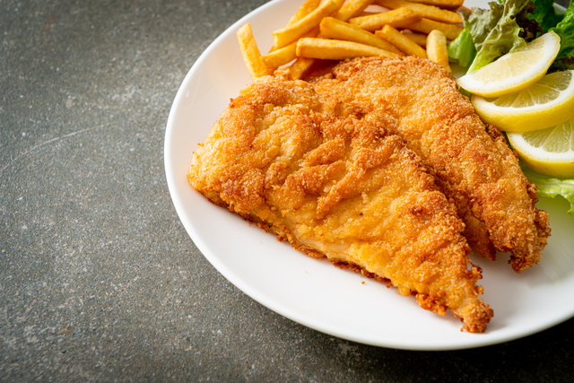

Schnitzel

Das beste Schnitzel am Ort
Das klassische Wiener Schnitzel Rezept -
wird am liebsten sonntags mit Petersilkartoffeln oder Reis serviert.
Zutaten:
- 4 Stk Kalbsschnitzel (à 160 g)
- 4 Prise Salz
- 150 g Mehl (griffig)
- 2 Stk Eier
- 300 g Semmelbrösel
- 1 Pk Backfett (Öl od. Butterschmalz)
- 1 Stk Zitrone
Home